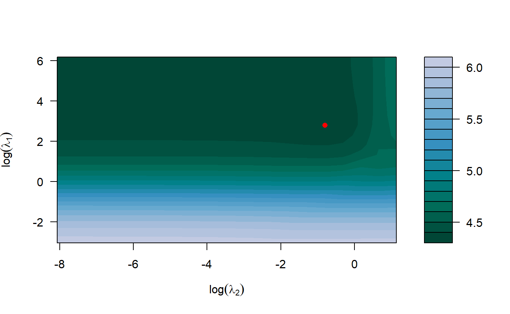

Introduction
The xrnet R package is an extension of regularized regression (i.e. ridge regression) that enables the incorporation of external data that may be informative for the effects of predictors on an outcome of interest. Let \(y\) be an n-dimensional observed outcome vector, \(X\) be a set of p potential predictors observed on the n observations, and \(Z\) be a set of q external features available for the p predictors. Our model builds off the standard two-level hierarchical regression model,


but allows regularization of both the predictors and the external features, where beta is the vector of coefficients describing the association of each predictor with the outcome and alpha is the vector of coefficients describing the association of each external feature with the predictor coefficients, beta. As an example, assume that the outcome is continuous and that we want to apply a ridge penalty to the predictors and lasso penalty to the external features. We minimize the following objective function (ignoring intercept terms):

Note that our model allows for the predictor coefficients, beta, to shrink towards potentially informative values based on the matrix \(Z\). In the event the external data is not informative, we can shrink alpha towards zero, returning back to a standard regularized regression. To efficiently fit the model, we rewrite this convex optimization with the variable substitution \(gamma = beta - Z * alpha\). The problem is then solved as a standard regularized regression in which we allow the penalty value and type (ridge / lasso) to be variable-specific:

This package extends the coordinate descent algorithm of Friedman et al. 2010 (used in the R package glmnet) to allow for this variable-specific generalization and to fit the model described above. Currently, we allow for continuous and binary outcomes, but plan to extend to other outcomes (i.e. survival) in the next release.
Setup
- For Windows users, install RTools (not an R package)
- Install the R package devtools
- Install xrnet package with the install_github function (optionally install most recent / potentially unstable development branch)
# Master branch
devtools::install_github("USCbiostats/xrnet")
# Development branch
devtools::install_github("USCbiostats/xrnet", ref = "development")- Load the package
A First Example
As an example of how you might use xrnet, we have provided a small set of simulated external data variables (ext), predictors (x), and a continuous outcome variable (y). First, load the example data:
Fitting a Model
To fit a linear hierarchical regularized regression model, use the main xrnet function. At a minimum, you should specify the predictor matrix x, outcome variable y, and family (outcome distribution). The external option allows you to incorporate external data in the regularized regression model. If you do not include external data, a standard regularized regression model will be fit. By default, a lasso penalty is applied to both the predictors and the external data.
Modifying Regularization Terms
To modify the regularization terms and penalty path associated with the predictors or external data, you can use the define_penalty function. This function allows you to configure the following regularization attributes:
- Regularization type
- Ridge = 0
- Elastic Net = (0, 1)
- Lasso / Quantile = 1 (additional parameter
quantileused to specify quantile, not currently implemented)
- Penalty path
- Number of penalty values in the full penalty path (default = 20)
- Ratio of min(penalty) / max(penalty)
- User-defined set of penalties
As an example, we may want to apply a ridge penalty to the x variables and a lasso penalty to the external data variables. In addition, we may want to have 30 penalty values computed for the regularization path associated with both x and external. We modify our model call to xrnet follows.
-
penalty_mainis used to specify the regularization for the x variables -
penalty_externalis used to specify the regularization for the external variables
xrnet_model <- xrnet(
x = x_linear,
y = y_linear,
external = ext_linear,
family = "gaussian",
penalty_main = define_penalty(0, num_penalty = 30),
penalty_external = define_penalty(1, num_penalty = 30)
)Helper functions are also available to define the available penalty types (define_lasso, define_ridge, and define_enet). The example below exemplifies fitting a standard ridge regression model with 100 penalty values by using the define_ridge helper function. As mentioned previously, a standard regularized regression is fit if no external data is provided.
Tuning Penalty Parameters by Cross-Validation
In general, we need a method to determine the penalty values that produce the optimal out-of-sample prediction. We provide a simple two-dimensional grid search that uses k-fold cross-validation to determine the optimal values for the penalties. The cross-validation function tune_xrnet is used as follows.
cv_xrnet <- tune_xrnet(
x = x_linear,
y = y_linear,
external = ext_linear,
family = "gaussian",
penalty_main = define_ridge(),
penalty_external = define_lasso()
)To visualize the results of the cross-validation we provide a contour plot of the mean cross-validation error across the grid of penalties with the plot function.

Cross-validation error curves can also be generated with plot by fixing the value of either the penalty on x or the external penalty on external. By default, either penalty defaults the optimal penalty on x or external.

The predict function can be used to predict responses and to obtain the coefficient estimates at the optimal penalty combination (the default) or any other penalty combination that is within the penalty path(s). coef is a another help function that can be used to return the coefficients for a combination of penalty values as well.